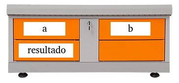

2 Tópico - Funções
Funções são os blocos de construção do R (Wickham 2014). Elas provêm funcionalidades, manipulam dados, evitam redundância de código, dentre outros benefícios. Porém, antes de podermos executar qualquer função, é necessário criá-las em processo chamado de definição (declaração) de função. A definição de uma função pode seguir um protótipo (esboço), conforme:
comando 1 comando 2 . . . comando N
}
Para manipular dados uma função precisa dispor de objetos que foram criados, podendo ser passados para a função por meio de argumentos ou ser gerados dentro da própria função. Geralmente, desejaremos que uma função receba um ou mais objetos através dos argumentos e faça operações com os dados contidos nesses objetos. Veja a definição de uma função para somar dois números:
soma <- function(a = 1, b = 10) # Entre parênteses ficam os arqumentos da função que podem ter valores padrão (default)
{ # Entre chaves seguem os comandos (operações) da função, também conhecido como corpo da função
resultado <- a + b
return(resultado) # return() indica que um objeto será retornado, sendo considerado uma boa prática
}
Perceba alguns elementos da função soma() acima. Ela possui os argumentos a e b (entre parênteses) para os quais foram atribuídos valores padrão com o sinal de igualdade (=). Também possui um corpo (entre chaves), onde é feita a atribuição da soma dos valores de a e b ao objeto resultado e, retornado esse objeto pelo comando return(). Após ser definida e carregada em uma sessão do R (ex: inserida no console do RStudio), uma função pode ser invocada, conforme:
soma() # Invocação sem passar nada, usa valores padrão (1 e 10)## [1] 11soma(a = 2) # Invocação informando apenas o valor de 'a'## [1] 12soma(b = 1) # Invocação informando apenas o valor de 'b'## [1] 2
Como você pode ver os argumentos a e b da função soma() fornecem canais que podemos usar para passar objetos (nesse caso números) para a função. No entanto, não é obrigatório passar os números já que os argumentos possuem valores padrão permitindo a operação de soma no corpo da função. Não obstante, podemos usar os dois argumentos:
soma(1, 1) # Invocações informando os valores de 'a' e 'b'## [1] 2soma(3 + 4, 3)## [1] 10Podemos informar os valores dos argumentos considerando a posição dos mesmos - conforme os exemplos acima - ou fazer isso usando os nomes dos argumentos. Nesse caso, a posição dos argumentos não importa, conforme:
soma(a = 4, b = 3)## [1] 7soma(b = 10, a = 5)## [1] 15É possível persistir objetos na sessão do R e passá-los como argumentos:
num_a <- -30
num_b <- 20soma(a = num_a, b = num_b)## [1] -10soma(a = num_b, b = num_a + 30)## [1] 20
Uma função é um pedaço contido de código que executa uma ou mais funcionalidades. Além disso, todos os objetos criados dentro de uma função, incluindo seus argumentos, só existiram enquanto a função estiver executando. Dessa forma, nenhum objeto da função soma() passará a existir no ambiente do R (global environment) - disponível na aba Ambiente do RStudio - após sua execução. Uma função no R possui um ambiente próprio (function environment), tendo a função soma() seu próprio armário de objetos que existirá apenas na execução da mesma, conforme.

Não obstante, ao ser executada, uma função retornará sempre ao menos um novo objeto. Caso não exista um comando de return() no corpo da função, o objeto retornado será aquele gerado pelo último comando. Observe a definição da seguinte função e sua invocação:
calcula <- function(a = 0, b = 1) {
# Imprime operações matemáticas básicas
print(paste("A soma do número", a, "com o número", b, "é:", a + b))
print(paste("A subtração do número", a, "pelo o número", b, "é:", a - b))
print(paste("A multiplicação do número", a, "pelo número", b, "é:", a * b))
print(paste("A divisão do número", a, "pelo número", b, "é:", a / b))
}
retorno <- calcula(3, 2)## [1] "A soma do número 3 com o número 2 é: 5"
## [1] "A subtração do número 3 pelo o número 2 é: 1"
## [1] "A multiplicação do número 3 pelo número 2 é: 6"
## [1] "A divisão do número 3 pelo número 2 é: 1.5"
Qual valor está armazenado no objeto retorno? Justamente a concatenação gerada pela função paste() no último comando:
retorno## [1] "A divisão do número 3 pelo número 2 é: 1.5"Observe que o retorno do objeto gerado no último comando ocorre mesmo se houver atribuição, conforme:
soma <- function(a = 0, b = 0) {
resultado <- a + b
}A seguinte invocação não imprime nada.
soma(4, 3) E agora?
retorno <- soma(4, 3) # o objeto 'retorno' recebe o valor da soma
retorno## [1] 7Perfeito, sigamos com uma lista de exercícios.
2.1 Exercícios básicos
2.1.1 Selecione verdadeiro (TRUE) ou falso (FALSE)
function()é uma diretiva que permite declarar os parâmetros de uma função.Nomes de funções são palavras reservados no R.
O
return()indica qual objeto será retornado por uma função, sendo considerado uma boa prática. Na ausência dereturn(), o objeto criado no último comando será retornado.Entre as chaves ficam dispostos os comandos de uma função, também conhecido como
corpoda função.Uma função pode ser considerada um bloco de construção do R mas não é um objeto.
Uma função pode ser definida sem possuir argumentos ou comandos.
A seguinte declaração
soma = function(a, b) a + btambém é uma função.Com a função
class()eu posso identificar se um objeto é uma função.
2.2 Exercícios intermediários
2.2.1 Observe a definição da seguinte função:
diferenca_absoluta <- function(a, b) abs(a - b)A invocação da função na forma diferenca_absoluta(b = 7):
2.2.3 Crie uma função
Que retorne a multiplicação entre dois números
Que retorne a raiz quadrada do quadrado da diferença de dois números
multiplica <- function(a, b) a * b
diferenca_quadratica <- function(a, b) sqrt((a - b )^2)